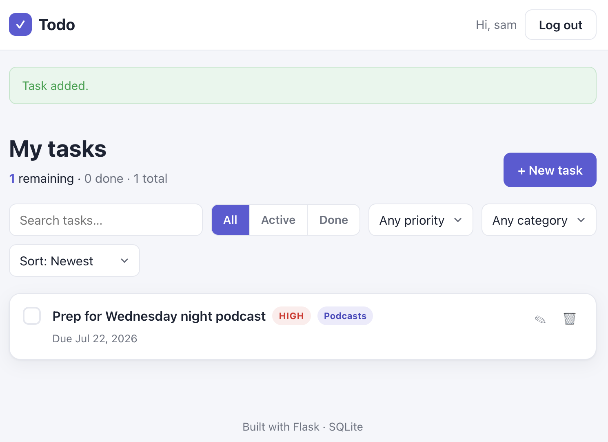

One Flask todo app, built twice. Replacing its heavy dependencies with small, AI-written, purpose-built code cut the third-party production footprint from 216,727 to 32,654 lines, an 85% reduction. Behavior stayed identical, and the security-sensitive libraries stayed with the experts.
Measured 2026-07-15 with cloc 2.06, production scope
(code that ships to prod; dev/test toolchain excluded). Full method, per-step diff trail, and
the argued stopping point in research notes.
flask remainsWhen code was expensive to write, pulling in a general-purpose library was usually the rational choice. You got a working solution cheaply, and accepted the costs: unknown maintainers, far more code than you need, and a "good enough" fit to your actual problem. When AI can produce a precise, minimal implementation on demand, that math deserves a fresh look, dependency by dependency. For some, owning a small, purpose-built module you fully understand becomes the better deal. How many is a dial, not a doctrine — set by your app, your team, and your risk profile.
The vehicle is a full-featured Flask + SQLite + login todo app, kept in
two behavior-identical variants: a baseline on the conventional
Python web stack, and a limited variant whose heavy dependencies were replaced
one at a time. A shared black-box test suite, byte-identical across both, is the oracle that
proves each swap preserved behavior. The gap in their cloc figures is the finding.

Third-party production code, before and after
Lines of code that ship to production, excluding the dev/test toolchain. The same app, the same tests passing, 85% less dependency code underneath it.
SQLAlchemy alone was 61.8% of all shipped dependency code: 133,937 lines
for an app with two tables and a dozen simple queries. Email validation cost another ~39k: the
768-line email-validator drags in an entire IDNA + DNS stack (idna 19,389
and dnspython 19,300) to format-check a string. Together, the ORM and the email stack
are 80% of everything that ships. The framework glue was never the bloat.
The engines were.
What five lines in pyproject.toml actually install
Left: the dependency list as a developer sees it. Right: the 16 packages it resolves to in production, sized by lines of code. Line thickness tracks each declaration's share of the footprint.
cloc run. The 16
packages sum to 216,669; 58 LOC of stray vendored files, attributable to no single
package, complete the 216,727 baseline.Email validation is notoriously hard, and it's the one cut here that's a judgment call rather
than an obvious win. What's literally legal per the RFC grammar is far
broader than what most apps want to accept (customer/department=shipping@example.com
is a valid address), so shedding the ~39k-line stack also hands you the job of drawing that
line. It cuts both ways: the limited variant deliberately went narrower
than the spec — internationalized addresses are out — yet quietly accepted all-numeric TLDs
like user@example.123 until the shared suite caught it. The cost and the safety
net, in a single example.
So the takeaway is a fork, not a verdict. If you want precise control over what your app accepts, owning a small validator is now cheap — and the quiet part: cheap code includes cheap tests. Working with an AI, enumerating the accept/reject suite an email validator needs is a conversation, not a research project, and that oracle is what holds the line. If you'd rather not carry that responsibility, the expert-maintained library is still a perfectly good answer.
Each removal replaced one library with purpose-built first-party code and landed as a single git commit. A step only counted when the unchanged test suite passed afterward. The shape of the descent is the argument: SQLAlchemy is the cliff (−137,490), the email stack is the second step (−39,457), and everything after is a rounding-error tail. Diminishing returns made the stopping point obvious.
Third-party LOC still shipping after each removal
Running total after the dependency named below each column was replaced. The final column (green) is the shipped limited variant.
The stopping point matters as much as the cuts. The one declared dependency left is
flask; everything still shipping is Flask's own transitive core. Most of it is exactly
what the caveat says to leave with the experts: password hashing
(werkzeug.security, required anyway), autoescaping as the XSS
defense on every template, and cookie signing that the first-party CSRF and
remember-me modules deliberately ride on rather than reinvent. AI-written replacement is a tool for
oversized general engines with test-pinnable slivers, not a mandate to rewrite the platform or the
cryptography. This experiment prices the options; where the dial stops in your app is your call.
What one line in pyproject.toml still installs
The limited variant's entire dependency list. It resolves to Flask's own transitive core — seven packages, 32,596 LOC, none of it rewritten. Bars are on the same scale as the baseline figure above.
cloc run. The 58 LOC of stray vendored files
noted above ride along with these seven packages, bringing the shipped total to 32,654.Every number below comes from re-running the same production-scoped cloc measurement
after each commit. ~409 lines of dependency code shed for every first-party line
added. That's the whole trade in one ratio.
| Step | Dependency removed | 3P shed | 1P added | 3P total | 1P total (app/) |
|---|---|---|---|---|---|
| 0 | — (baseline clone) | — | — | 216,727 | 964 |
| 1 | SQLAlchemy, Flask-SQLAlchemy (+ typing_extensions) | 137,490 | +100 | 79,237 | 1,064 |
| 2 | email-validator (+ idna, dnspython) | 39,457 | +21 | 39,780 | 1,085 |
| 3 | Flask-WTF | 520 | +39 | 39,260 | 1,124 |
| 4 | WTForms (+ i18n catalogs) | 5,923 | +195 | 33,337 | 1,319 |
| 5 | Flask-Login | 683 | +95 | 32,654 | 1,414 |
| Total | 184,073 | +450 | 32,654 | 1,414 |
Side story: the same trade
exists in dev tooling — python-dotenv (766 LOC, local-only .env loading;
prod injects real env vars) is a dev dependency here, and the limited variant still swapped it for
a 12-line first-party loader. Dev deps can shrink too, but selectively: nobody is about to
replace pytest.